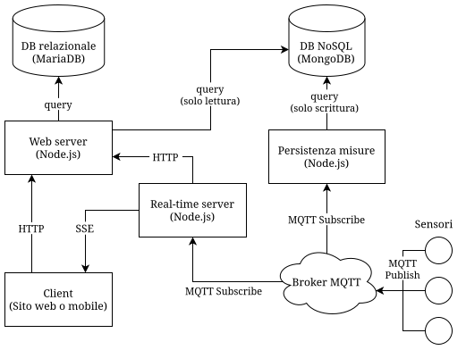

Si propone un sistema informatico composto dai seguenti elementi:
- Broker MQTT: servizio esterno che riceve i dati dai sensori e li rende disponibili ai servizi di backend.
- Persistenza misure: legge le misurazioni dal broker e le salva su database.
- Real-time server: servizio dedicato all'inoltro immediato delle nuove misurazioni ai client connessi.
- Web server: backend applicativo principale gestisce il database relazionale, l'autenticazione ed i permessi utente.
- DB relazionale: database per la memorizzazione dei dati strutturati (utenti, anagrafica sensori, permessi...).
- DB NoSQL: database per salvare le misurazioni in formato JSON variabile.
- Client: interfaccia utente (sito web e app mobile) per consultare i grafici storici e in tempo reale.

Sensori e Broker MQTT
I sensori inviano periodicamente le proprie misurazioni in formato JSON al Broker MQTT tramite il protocollo MQTT (operazione di publish). Questo protocollo è lo standard in ambito IoT perché è estremamente leggero, richiede poca banda ed è progettato per dispositivi con risorse hardware limitate. L'architettura publish/subscribe disaccoppia i sensori dal backend: i servizi dell'applicazione si iscrivono (subscribe) al broker per ricevere i messaggi non appena vengono pubblicati.
Persistenza misure (Node.js)
Microservizio dedicato esclusivamente al salvataggio dei dati. Si sottoscrive al Broker MQTT e, per ogni misurazione ricevuta, effettua una query di sola scrittura sul DB NoSQL. Separare questa componente dal Web server evita che il flusso continuo di scritture dei sensori rallenti le richieste degli utenti.
DB NoSQL (MongoDB)
Database orientato ai documenti scelto per immagazzinare le misurazioni. Poiché i sensori sono eterogenei e inviano payload JSON con campi diversi tra loro, un database schema-less come MongoDB permette di salvare direttamente i documenti senza dover definire o modificare continuamente una struttura tabellare rigida.
Real-time server (Node.js)
Servizio dedicato all'aggiornamento in tempo reale dell'interfaccia utente. Si iscrive al Broker MQTT per ricevere le misurazioni in ingresso e le inoltra istantaneamente ai client connessi usando il protocollo SSE. Inoltre comunica col Web server via HTTP per controllare che l'utente sia autenticato ed abbia i permessi per visualizzare le misure dei sensori che richiede.
Web server (Node.js)
Backend principale dell'applicazione. Comunica con i client via HTTPS per gestire l'autenticazione, l'anagrafica dei dispositivi e l'accesso allo storico dei dati. Interroga il DB NoSQL in sola lettura per recuperare le misurazioni passate necessarie a disegnare i grafici all'apertura dell'applicazione.
DB relazionale (MariaDB)
Database utilizzato per persistere i dati strutturati e relazionali dell'applicazione, come gli account utente, le associazioni tra utenti e sensori e i metadati dei dispositivi, dove sono necessarie forti garanzie di integrità e consistenza.
Client (Sito Web e App Mobile)
Applicazione frontend fruibile da browser (SPA) e da smartphone (app Android e iOS), si è scelto di implementarla usando React Native in modo da avere un'unica base di codice per tutte le piattaforme. Comunica via HTTPS con il Web server per le operazioni standard e il caricamento dello storico delle misure, e mantiene una connessione SSE aperta con il Real-time server per aggiornare i grafici dinamicamente all'arrivo di ogni nuova misurazione.